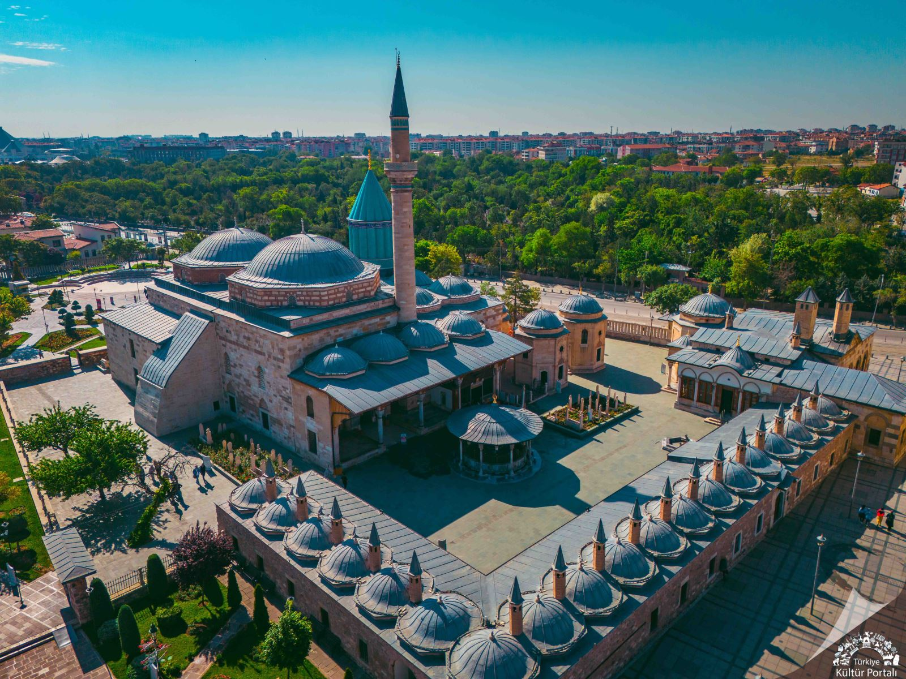
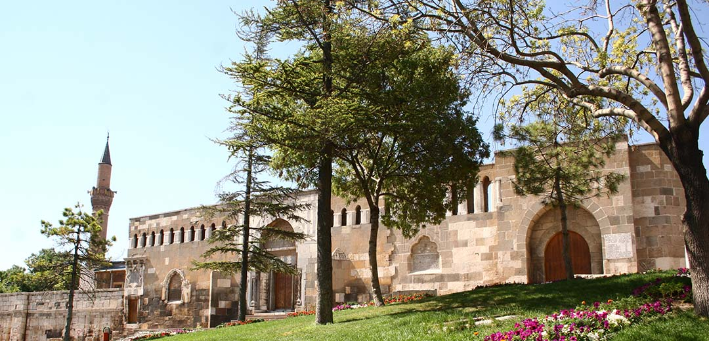
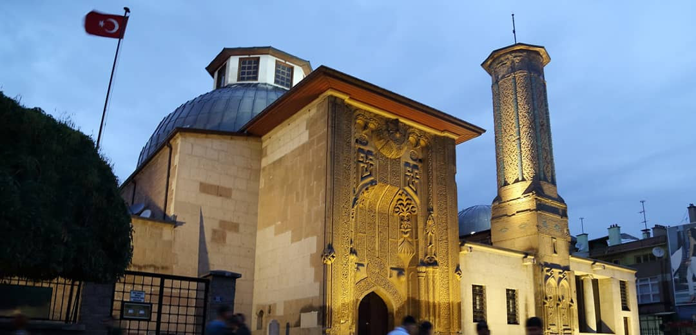
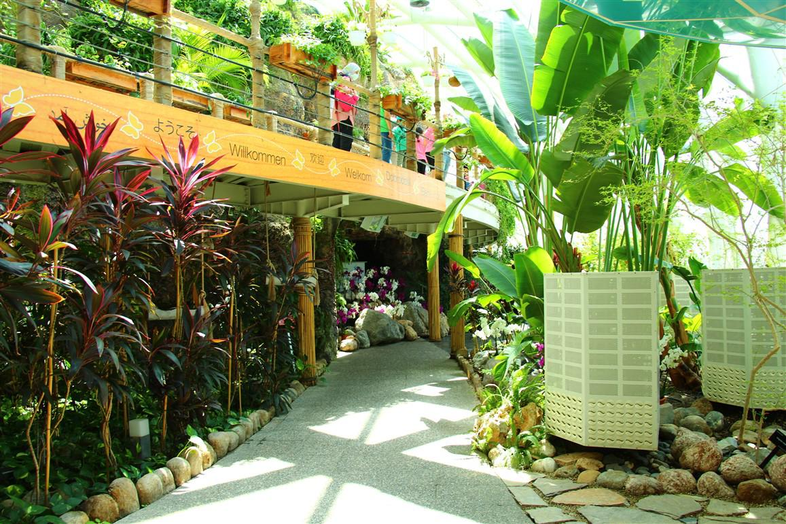

Şehir Hakkında
Konya, Türkiye’nin yüzölçümü olarak en büyük ili olup yaklaşık 2.3 milyon nüfusa sahiptir. Selçuklu Devleti’ne başkentlik yapmış bu şehir; tarihi, kültürel ve doğal güzellikleri ile öne çıkar.
Konya, Türkiye’nin yüzölçümü olarak en büyük ili olup yaklaşık 2.3 milyon nüfusa sahiptir. Selçuklu Devleti’ne başkentlik yapmış bu şehir; tarihi, kültürel ve doğal güzellikleri ile öne çıkar.




1273 yılında inşa edilen Yeşil Kubbe, Mevlâna Müzesi'nin kalbi sayılır. 1926 yılında "Konya Âsar-ı Atîka Müzesi" adıyla açılmış, 1954’ten beri mevcut adıyla hizmet vermektedir.
Şehrin merkezindeki bu höyük, tarih öncesi dönemlerden Selçuklulara kadar birçok medeniyete ev sahipliği yapmıştır. Tepede Selçuklu sultanlarının türbeleri de bulunur.
Selçuklu Veziri Sâhip Atâ Fahreddin Ali tarafından hadis ilmi öğretilmek üzere inşa ettirilmiştir. Özellikle giriş kapısındaki (taç kapı) süslemeler dünyaca ünlüdür.
İçerisinde 15 farklı türden binlerce kelebeğin uçtuğu, 28 derecelik sabit sıcaklığa sahip özel bir ekosistemdir. Konya'nın modern turizm yüzünü temsil eder.